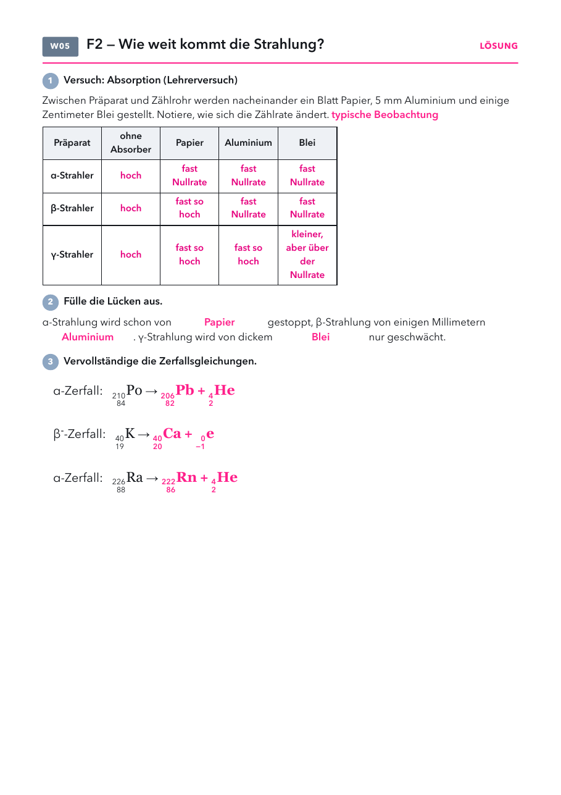

Klasse 10 · Physik · W05 (Woche ab 12.10.2026) · Leitfrage 2
| Material | Anzahl | Hinweis |
|---|---|---|
| Präparate α, β, γ | je 1 | nur Lehrkraft, nach RiSU |
| Geiger-Müller-Zählrohr mit Zählgerät | 1× | |
| Absorber: Papier, Aluminium 5 mm, Blei | je 1 |
| Material | Anzahl | Hinweis |
|---|---|---|
| Periodensystem | 1× |

| im Alltag | was man sieht | warum |
|---|---|---|
| Bleischürze beim Röntgen | schützt die übrigen Körperteile | Blei schwächt energiereiche Strahlung stark. |
| Rauchmelder | darf man anfassen | Die α-Strahlung kommt nicht einmal durch das Gehäuse. |
| Behälter für radioaktive Stoffe | dicke Wände aus Stahl oder Blei | γ-Strahlung wird nur geschwächt, nie ganz gestoppt. |
Zerfallsgleichungen üben mit sofortiger Rückmeldung, Absorberversuch mit Papier, Aluminium und Blei.
Lösung: α hinter Papier fast Nullrate, β hinter Aluminium fast Nullrate, γ hinter Blei kleiner, aber über der Nullrate. Lücken: Papier, Aluminium, Blei. Po-210 → Pb-206 + He-4, K-40 → Ca-40 + e, Ra-226 → Rn-222 + He-4.